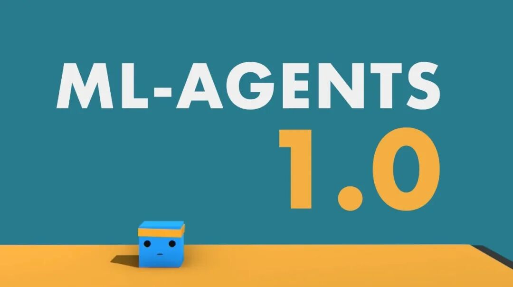

上次更新这篇文章已经是两年半以前了。（点击左下角的阅读原文可以看到这篇文章的前篇）在2018.1的那次更新中，我谈到自己终于如愿以偿进入了AI这个领域，成为了一个机器学习工程师。而在过去的整个这段时间里，我一直在Unity Technologies的AI org下面的ml-agents组工作。

ml-agents是一个在github上面热度非常高的开源项目，我个人对它非常看好。如果用一句话来解释的话，这个项目可以帮助任何一个用Unity制作的游戏用强化学习来“自动”训练出AI。这里的自动之所以打上引号，是因为这个自动的中间还有大量的工作要做。比如你首先要让AI可以控制游戏，这就意味着你要让AI能看到游戏里的东西，也要让AI可以操作游戏，其次你要让AI知道什么是你希望它达到的结果。
这样说可能有些抽象，我们就拿围棋来举个例子。在围棋中，AI可以看到围棋这个游戏里的东西，即每个位子目前落了什么颜色的子。AI也可以操作围棋这个游戏，即选择在哪个位置下子。AI还可以知道你希望它达到的结果，即胜利这个结果。有了这些最基础的信息，理论上就可以让AI不停地自己跟自己下棋，让AI不停地试错，最终训练出一个类似于AlphaGo这样异常强大的围棋AI。
当然了AlphaGo里面单单这样训练是肯定得不到一个厉害的AI的，但是它也是遵循了这一套基本的强化学习的算法，加上无数的优化，最终训练出得以打败世界冠军的围棋AI。
长话短说，在组里工作的两年半里，除了日常的工作，我还花了大量的时间去学习强化学习的基础知识。这个领域的东西非常多，除了深度学习的知识，还涉及到很多传统的控制以及强化学习的基础理论。我曾经专门写了一篇文章，讲了我大致的学习路径。
虽说我花费了大量的时间学习深度学习和强化学习的知识，日常工作当中能让我应用到这些知识的地方却并不多。对于我们的开源项目来说，由于要兼顾到普适性，因此一直采用了最为稳定的PPO模型，之后才加入了SAC，因此其实模型方面需要做的事情并没有很多。这些并不多的模型方面的工作很难落到我的头上，因为组里已经有一些在模型方面的造诣比我深的同事，模型的相关项目自然而然就落到了他们身上。到头来我的主要工作还是在做一些工程上的东西，比如我最主要的工作之一是开发了一个云上的强化学习平台，让ml-agents的训练可以很容易地转移到云上来，大大提升了训练的效率。
工作上的事情就说到这里，下面聊聊这次跳槽的情况吧。这次跳槽我的准备时间要比上一次更加长，也更加彻底。我从2019年10月份重新回到了来offer的小班，开始了我的刷题之旅。由于这段Unity的工作经历，这一次我下定决心一定要进入FLAG这些所谓的一线公司。一方面这些公司普遍工资会更高，因此经济上的回报会更高。另一方面这些公司的人员素质也会比非一线公司好不少，因此可以学到的东西也会更加多一些。除了这两点因素，我还发现非一线公司里升职比较快的人大多是从一线公司跳槽过来的，而很多一开始就在非一线公司做的人，往往很难升职。
在湾区一线公司对于程序员面试，最重视的内容之一就是算法了，而刷题又是逃不过的一环。虽说上一次跳槽我已经好好地准备过一轮算法了，对于一线公司的面试来说，那次准备还是远远不够的。这一次我的目标是把算法好好彻底地巩固一番，而来offer的小班在这个过程当中给了我非常非常多的支持。
在来offer的小班的洗礼下，我的算法水平突飞猛进。以前的我可能或多或少都是在背题目，基本上是对于每一种题目，或者每一类题目有一些固定的解法，很少关注这些解法背后的原因。而来offer小班的课程是真的把这些解法揉烂了，然后把里面最细致的逻辑一层一层抽出来给你讲清楚，再辅以大量的练习。往往一道leetcode hard的题目，在这样细致的分解之下，一下子就变得没有那么难了，而是变成了几行清晰的大逻辑，一下子就可以讲清楚，写出来。
我的来offer小班从2019.10一路上到2020.5。然后我的面试基本上是从2020.3开始的。大部分的职位面的是纯Software Engineer的岗位，也有不少ML Engineer的岗位。作为一个有好几年工作经验的人，面试对我来说是不太难拿的。我拿到了Deepmind， Waymo， Cruise，Pinterest，LinkedIn，OpenAI， SnapChat， Twitter， Microsoft， Square， Nuro， Apple， Amazon， Google， Facebook的电面，然后这里面一大半我都拿到了Virtual OnSite ，但是Cruise， Twitter，Microsoft， Square和LinkedIn拿到Onsite已经在2020.4左右的时候，正好那个时候由于美国的疫情变严重了，好多公司缩招了，所以这几个公司就把Onsite取消了。最终我拿到了Facebook， Google和Snapchat这三个offer，最终选择了去Facebook， 做Infra track。Google之所以没去是因为相对来说Package少了一点，而且他们headcount基本都没了。
一直听说Facebook工作压力有点大，我也是有些忐忑，不过总归是一线大公司，我还是很期待可以认识很多厉害的同事，然后学到很多东西的。
回头来看的话，我倒是觉得总体走得还是蛮顺的。虽说上来offer小班的课觉得有点苦，一边上班一边刷题压力也很大，但是一直都是走在老师设计好的道路上，基本没有走偏的可能性，所以力气都是用在刀刃上，也达到了预先设定的目标。在此我要真心地感谢来offer的老师们，尤其是小班的主讲老师闫老师以及小小班的Derek老师和Edison老师，没有他们的帮助，我相信我的跳槽之旅可能会比这次艰辛好多倍。